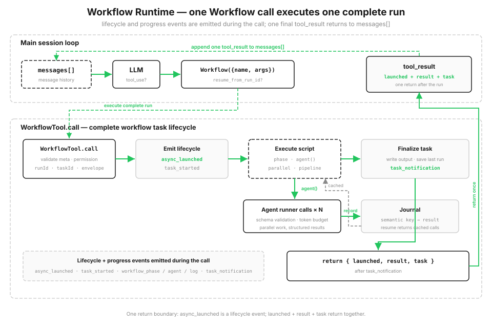

s16: Workflow Runtime — 模型决定单步，脚本决定编排
s01 → ... → s14 → s15 → s16 → s17
"一次 tool_use，跑完一整套编排" —
Workflow工具启动一个可恢复的脚本运行时，协调多次 agent 调用。Harness 层: 编排 — 在单 agent 循环之上，执行保存好的多 agent 脚本。
从 s01 到 s15，每一轮都由模型决定调用哪些工具。工具结果进入 messages[] 后，模型再根据更新后的上下文决定下一步。当后续路径取决于上一步发现了什么时，这种方式很合适。
有些任务会重复一套固定流程。例如代码审查可以同时检查多个维度，再逐条验证发现、合并重复项并按严重程度排序。执行前已经知道步骤及其先后关系，这时宿主需要三样东西：
- 并行，别一个一个串着等；
- 稳定的结果结构，即使每个 agent 的回答会变化；
- 可恢复，跑到一半断了，已经做完的部分别从头再来。
如果这套编排只存在于对话历史里，步骤顺序和检查点也只存在于历史里。保存好的 workflow 把固定流程写进代码，并在 journal 中记录已经完成的调用。
计划写在代码里，不是靠聊天一轮轮凑
在 harness 的工具池里加入一个 Workflow 工具。宿主注册由 agent() / parallel() / pipeline() / phase() 组成的可信脚本。模型只提供保存好的 workflow 名称、参数和可选的续跑 run ID，不会提交可执行代码或元数据。
workflow 以一次 tool_use 进入主循环。脚本运行时，runtime 会发出生命周期和进度事件，并把每一步写进磁盘上的 journal。脚本结束后，这次调用返回启动信息、结果和任务状态。脚本里的中间结果存在变量里，不会塞进对话历史。下次用 resume_from_run_id 重启时，没改过的 agent() 会直接使用 journal 中的结果。

SAMPLE_META = {"name": "review-changes", "description": "审查代码改动", "phases": ["Review", "Verify"]}
async def sample_workflow(ctx, args):
ctx.phase("Review")
results = await ctx.pipeline(DIMENSIONS, audit, verify) # 每个维度独立走 审计 → 验证
confirmed = [f for r in results if r for f in r["confirmed"]]
ctx.log(f"确认了 {len(confirmed)} 个真实问题")
return {"confirmed": confirmed}
Workflow 工具：一次调用，完成整次运行
Workflow 会加入 s15 宿主已有的工具池。用户可以要求运行一个保存好的 workflow，模型也可以在任务匹配已知编排时选择这个工具。适配器会用名称查询宿主管理的 WORKFLOWS registry，再把可信的元数据和函数交给运行时；s15 的其他工具仍在同一个循环里可用。
模型可见的 schema 只接受 name、args 和 resume_from_run_id。名称未知或参数格式错误时，适配器会返回错误工具结果，不会让宿主循环退出。随后运行时校验已经注册的元数据、经过权限检查、注册本地 workflow 任务，并在执行脚本前发出 async_launched。进度事件和最终的 task_notification 随后到达；调用返回可写入 JSON 的启动信息、结果和任务状态。
WORKFLOW_TOOL = {
"name": "Workflow",
"input_schema": {
"type": "object",
"properties": {
"name": {"type": "string"},
"args": {"type": "object"},
"resume_from_run_id": {"type": "string"},
},
"required": ["name"],
"additionalProperties": False,
},
}
async def run_workflow(name, args=None, resume_from_run_id=None):
meta, script_fn = WORKFLOWS[name]
out = await WorkflowTool().call(
meta, script_fn,
args=args,
resume_from_run_id=resume_from_run_id,
)
return {"launched": out["launched"], "result": out["result"],
"task": serialize_task(out["task"])}
Workflow 元数据：启动前先校验
每个保存好的 workflow 都会注册一份可信元数据，包含 name、description 和可选的 phases。运行时会在执行 workflow 代码前校验它：name 和 description 用来标识任务，phases 给进度显示分组命名。这些字段属于宿主 registry，不是模型输入。
注册内容不合法时，运行时会在启动前抛出 WorkflowInputError。这和 s12 校验 cron 表达式是一个思路：保存好的 workflow 有问题，就不要等到执行时才发现。
运行时会把 meta.name 用在本地产物文件名中，因此还要求它是 1-64 个字符的安全 slug，只能包含字母、数字、.、_、-。
def validate_meta(meta):
if not isinstance(meta, dict):
raise WorkflowInputError("meta 必须是对象字面量")
if not meta.get("name") or not meta.get("description"):
raise WorkflowInputError("meta 必须包含 name 和 description")
if not isinstance(meta["name"], str) or not WORKFLOW_NAME_RE.fullmatch(meta["name"]):
raise WorkflowInputError("meta.name 必须是 1-64 字符的安全 slug")
if "phases" in meta and (
not isinstance(meta["phases"], list)
or not all(isinstance(p, str) and p for p in meta["phases"])
):
raise WorkflowInputError("meta.phases 必须包含非空字符串")
return meta
编排原语
脚本收到一个只暴露少量编排原语的 ExecutionState，本身不直接读写文件，也不运行 shell。默认交互模式把 agent() 接到与宿主相同的真实 API client；每个子 agent 只读取 workflow 参数中提供的内容。demo 和单元测试使用 MockAgentRunner，便于重复观察事件和 journal。
| 原语 | 作用 |
|---|---|
agent(prompt, {schema, label, phase}) |
派一个子 agent 干活 |
parallel(thunks) |
等齐屏障：所有任务并行跑完，一起等结果回来 |
pipeline(items, *stages) |
每个 item 分阶段跑，不等齐，跑完一个往下走一个 |
phase(title) |
标记当前进度阶段（更新进度条） |
log(message) |
打一行进度日志 |
workflow(name, args) |
嵌套子工作流（只支持一层） |
每个 item 都要独立经过相同步骤时，可以使用 pipeline。item A 跑到第 3 阶段时，item B 可能还在第 1 阶段；下一步必须同时使用上一阶段全部结果时，再使用 parallel 等待所有调用完成。
某个分支失败时，两种原语都会先等待其他已启动的分支结束，再抛出错误。
通过 asyncio.to_thread() 发出的模型请求，不会因为等待它的协程被取消就停止。
等各分支结束后再关闭 journal，成功调用的结果才能保存并用于 resume，
最终任务通知也才能出现在最后一条进度事件之后。
async def parallel(self, thunks):
results = await asyncio.gather(
*[thunk() for thunk in thunks], return_exceptions=True
)
for result in results:
if isinstance(result, BaseException):
raise result
return results
async def pipeline(self, items, *stages):
async def run_item(item, idx):
value = item
for stage in stages:
value = await stage(value, item, idx)
return value
return await self.parallel([
lambda it=it, i=i: run_item(it, i) for i, it in enumerate(items)
])
结构化输出：别让子 agent 回来写散文
agent({schema}) 会要求子 agent 只返回匹配 schema 的 JSON 对象。运行时解析并校验结果，不符合时重试一次。这样下游代码拿到的是对象，不必再从自然语言中提取字段。
s05 就说过，工具的参数不能全信；这里是同一个道理反过来：子 agent 的输出也不能全信。加一层校验，不对就给一次机会重试，把不确定性挡在编排层外面。
run = await asyncio.to_thread(self.runner.run, prompt, schema, label)
result = run.value
if schema is not None:
ok, err = SimpleJsonSchema(schema).validate(result)
if not ok: # 提醒一次重试，再不对就报错
retry = await asyncio.to_thread(
self.runner.run, prompt + "\n\n返回合法的 JSON。", schema, label
)
result = retry.value
ok, err = SimpleJsonSchema(schema).validate(result)
if not ok:
raise WorkflowInputError(f"agent({{schema}}) 输出不合法: {err}")
任务状态和进度事件
LocalWorkflowTask 维护状态和 token 用量，向外发一条 SDK 风格的事件流：task_started → 一串 task_progress（包含阶段切换、子 agent 启动和日志输出）→ 最后一个 task_notification（完成或失败，带输出文件、agent 数和 token 数）。
演示会按顺序打印这些事件，并在最终通知后返回任务状态。
class LocalWorkflowTask:
def progress_event(self, ptype, **data): # 阶段/子agent/日志
self.progress.append({"type": ptype, **data})
print(f" 进度 {ptype} ...")
存储：快照 + journal，断了能续
运行时把每次运行的数据存在 s16_workflow_runtime/.runtime/：快照 <runId>.json、输出 <runId>.output.json、journal <runId>.journal.jsonl 和协调文件 <runId>.lock。每次新运行都会在打开 journal 前，用排他式文件创建预留新的 runId。整次执行和最终持久化期间都持有 run lock，另一个进程不能同时 resume 同一次运行。快照记录 workflow 名称、参数和任务状态；resume 会先验证已保存的快照和 journal，再改动原有的成功产物。
journal 是断点续跑的核心，它一条一条记下来每个 agent() 的结果：
class WorkflowJournal:
def record(self, key, value):
self._f.write(json.dumps({"key": key, "value": value}) + "\n")
self._f.flush()
self.cache[key] = value
resume：用 runId 续跑，没改的直接用缓存
带着 resume_from_run_id 再次调用 workflow 时，脚本会重新执行，但每个 agent() 都会计算一个确定的语义 key：key 在 journal 里有记录，就直接返回缓存结果；只有改过的调用以及依赖它的后续步骤才会真的运行。
这里有个关键点：key 不能依赖并发顺序。parallel 和 pipeline 里 agent 完成的顺序是不确定的，用"第几个完成"当 key，两次跑缓存就对错位了。所以 key 是根据调用内容（类型、标签、prompt、schema）算的稳定哈希，不是一个会竞争的计数器：
def key(self, kind, label, prompt, schema):
basis = f"{kind}|{label}|{prompt}|{json.dumps(schema, sort_keys=True)}"
return f"{kind}-{_stable_hash(basis) % 10**10:010d}"
# agent() 内部：
cached = self.journal.cached(key)
if cached is not MISS:
self.task.progress_event("workflow_agent", label=label, status="cached")
return cached
稳定调用键
续跑时，运行时需要把当前 agent() 与 journal 中的旧调用对应起来。稳定哈希让同一份 workflow 和同样的参数产生相同的调用 key。真实模型的回答可以变化；只要调用内容没有变化，resume 就直接使用 journal 中已经保存的结果。
跑起来看看
示例 workflow review-changes 用 pipeline 让每个审查维度独立走“审计 → 验证”。默认交互模式使用真实 API，并从 args.changes 读取待审查内容；demo 使用固定 runner 数据来展示 pipeline、结构校验、journal 和续跑。
async def sample_workflow(ctx, args):
ctx.phase("Review")
changes = args.get("changes", "")
async def audit(_v, dimension, _i):
out = await ctx.agent(f"检查这段变更里有没有{dimension}相关的问题：\n{changes}",
schema=FINDINGS_SCHEMA, label=f"audit:{dimension}", phase="Review")
return {"dimension": dimension, "findings": out["findings"]}
async def verify(audited, dimension, _i):
ctx.phase("Verify")
verdicts = await ctx.parallel([ # 每条发现独立做对抗性验证
(lambda f=f: ctx.agent(f"根据变更内容验证这条 finding：\n{changes}\n\n{f}",
schema=VERDICT_SCHEMA, label=f"verify:{dimension}:{f['title']}"))
for f in audited["findings"]])
return {"dimension": dimension,
"confirmed": [f for f, v in zip(audited["findings"], verdicts) if v and v["isReal"]]}
results = await ctx.pipeline(DIMENSIONS, audit, verify)
...
相对 s15 的变更
| s15 Agent Harness 集成 | s16 Workflow Runtime | |
|---|---|---|
| 循环 | 单个、模型驱动 | 主循环不变；工具背后执行脚本编排 |
| 谁决定下一步 | 模型逐轮决定 | 脚本预先写好编排流程 |
| 多 agent | s06 子 agent，一次性派出去 | 通过 agent-runner 边界执行脚本化、可续跑的调用 |
| 新增机制 | — | 编排原语、宿主 registry 与工具适配器、任务生命周期、进度事件、journal/续跑、结构化输出 |
s16 不替换主循环，它只是在工具层暴露 Workflow，背后启动一个本地 workflow 运行时：一份保存好的脚本通过 agent-runner 边界协调 N 次调用。s06 的子 agent 是模型临场派一次；s16 把编排写成可续跑的宿主代码。
试一下
python s16_workflow_runtime/code.py # 主模型和 Workflow 子 agent 都使用真实 API
python s16_workflow_runtime/code.py demo # 运行确定性的 review-changes 测试数据并观察事件流
python s16_workflow_runtime/code.py resume # 用上次的 runId 续跑，每个 agent() 都命中 journal 缓存
默认命令里，可以先让模型读取改动，再把内容放进 args.changes 并运行保存好的 review-changes workflow。主模型和 workflow 子 agent 都使用真实 API。demo 命令使用固定 runner 数据，便于重复观察生命周期和续跑；续跑命中全部缓存时显示 agents=0 tokens=0。
接下来
s17 Goal Loop 会使用一个更小、独立的循环检查既定目标是否已经达成，并据此决定是否还需要下一轮。